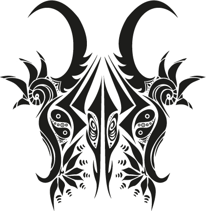
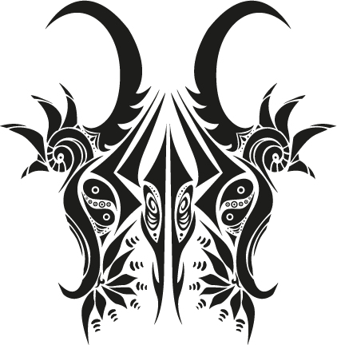
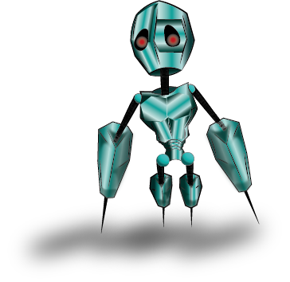
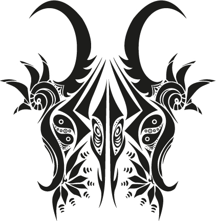
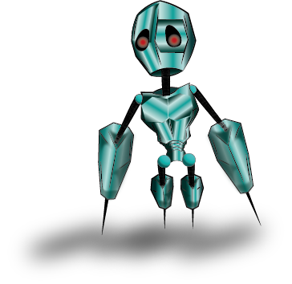

Software/Hardware
- Adobe Photoshop
- Adobe Illstrator
- Procreat
- Adobe Lightroom
- Eclipse IDE
My Work
 



I'm currently a student at Seminole State College pursuing my AS Digital Media degree. My parents are both cinematographers/videographers/photographers. I grew up in an artistic environment and was exposed to the world of media at a young age. I have attended many multimedia workshops throughout my years that included training on Adobe programs, photography, video, logo design, team collaboration, and so much more. I enjoy all types of artistic activities from digital to sculpting. Through this course I've learned to enjoy Adobe Illustrator most for my personal goals. I mostly enjoy character design and I am excited to learn some 3D and animation through this course.

